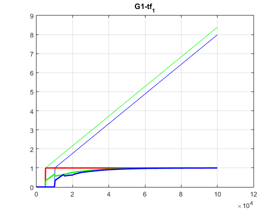
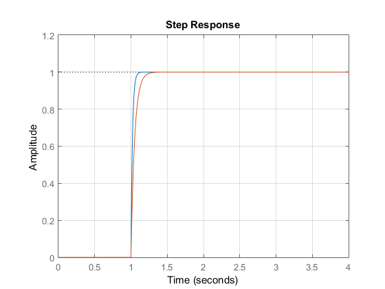

for i = 1:1
try
model = 'open_loop_model.slx';
sys = sys1(i);
G = G1(i);
[y,t] = step(sys);
simulation_time = 5*ceil(t(end));
sim_step = simulation_time/100000;
fig = figure();
sim(model);
plot(sp.Data, 'r');
hold on;
plot(control.Data, 'g');
hold on;
plot(pv.Data, 'b');
grid on;
K(i) = y(end) - y(1);
process_constant = find(abs(pv.Data-0.63) < 0.005);
Td(i) = sys.ioDelay;
tau(i) = pv.Time(process_constant(1)) - Td(i) - 1;
if Td(i) > tau(i)
lambda = 3*Td(i);
else
lambda = 3*tau(i);
end
Kp(i) = tau(i)/(lambda + Td(i))*K(i);
Ki(i) = tau(i);
K_p = Kp(i);
K_i = Ki(i);
model = 'closed_loop_model.slx';
hold on;
sim(model);
plot(sp.Data, 'r','LineWidth',2);
hold on;
plot(control.Data, 'g','LineWidth',2);
hold on;
plot(pv.Data, 'b','LineWidth',2);
grid on;
hold on;
title(strcat('G1-tf_',int2str(i)));
file = strcat('G1-tf-', int2str(i));
print(fig,file,'-dpng');
catch ME
'G1'
i
end
end
for i = 1:1;
figure();
G = G1(i)
step(G);
hold on;
sys = sys1(i+1)
step(sys)
grid on
end
Warning: The specified buffer for 'open_loop_model/LTI System/Input
Delay/Transport Delay' was too small. During simulation, the buffer size was
temporarily increased to 5120. In order to generate code, you need to update the
buffer size parameter
Warning: The specified buffer for 'closed_loop_model/LTI System/Input
Delay/Transport Delay' was too small. During simulation, the buffer size was
temporarily increased to 5120. In order to generate code, you need to update the
buffer size parameter
G =
1
exp(-1*s) * ----------
0.02 s + 1
Continuous-time transfer function.
sys =
1
exp(-1*s) * ----------
0.05 s + 1
Continuous-time transfer function.
 